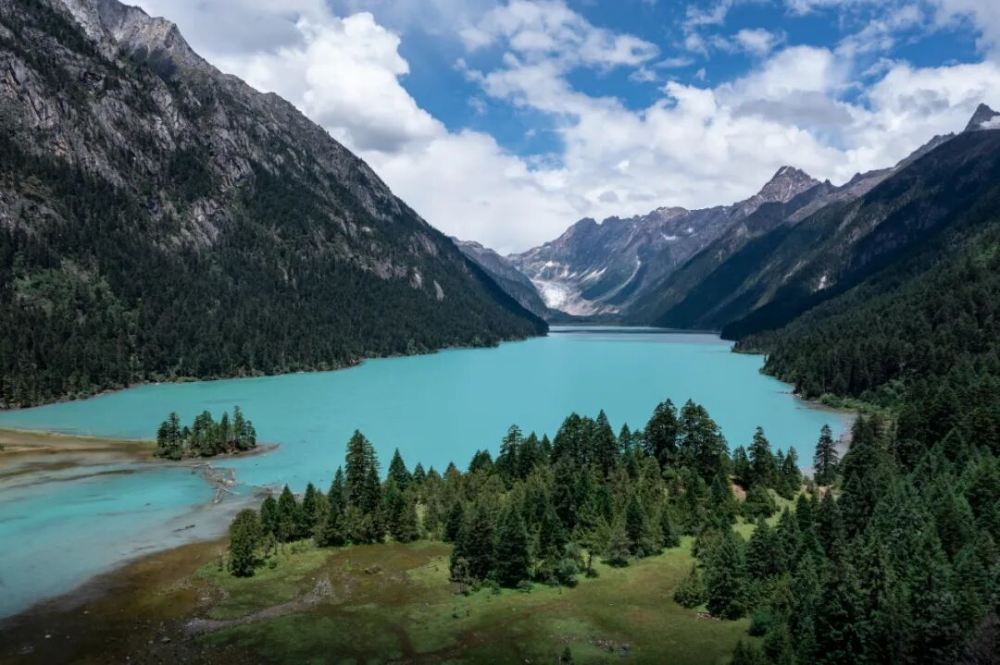
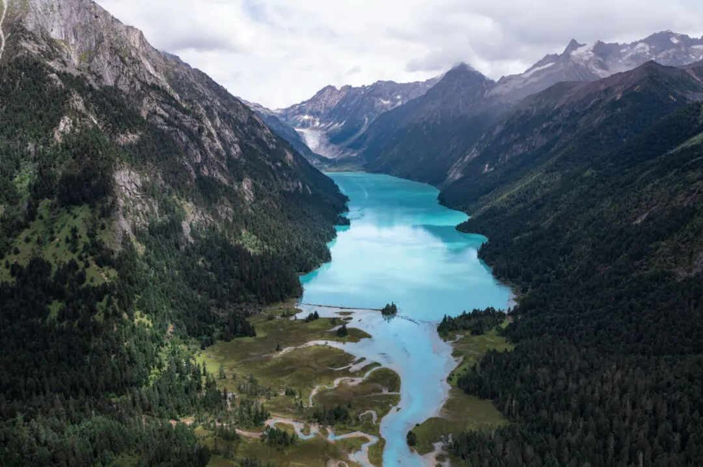
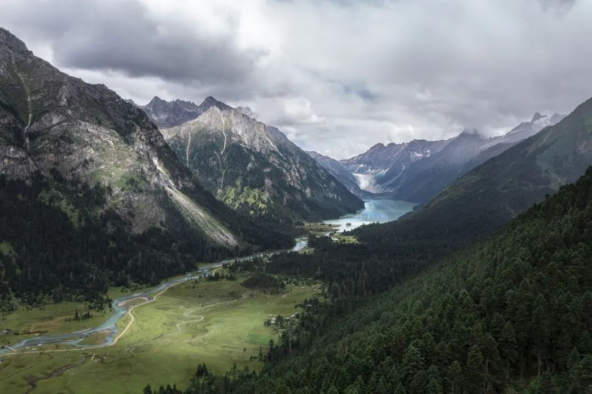
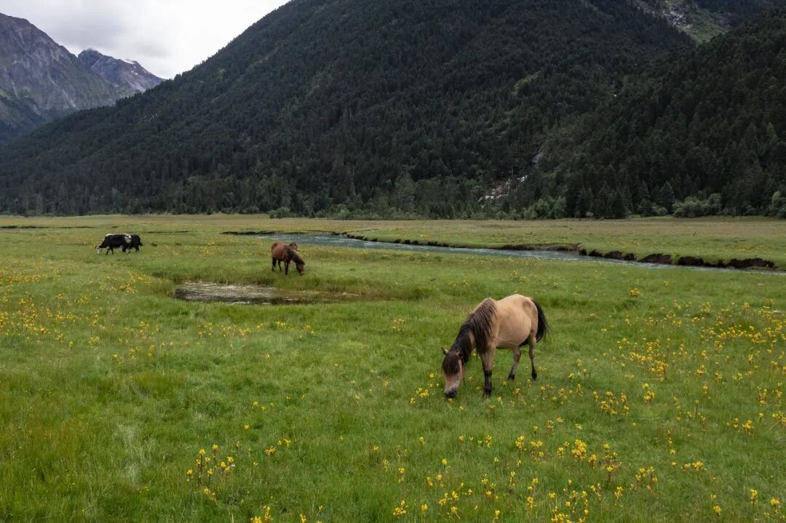
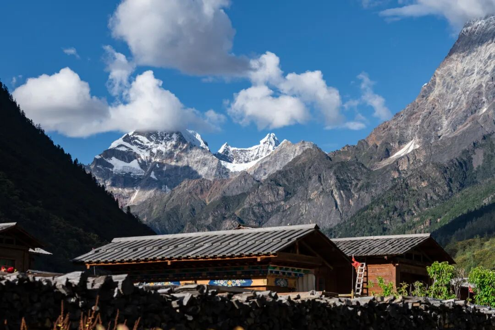
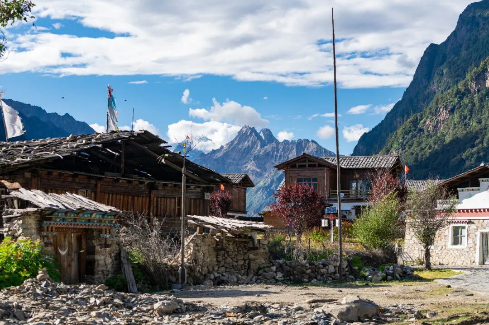
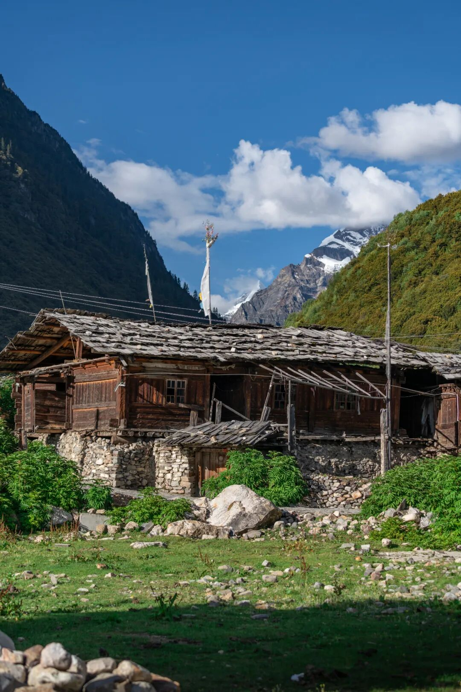
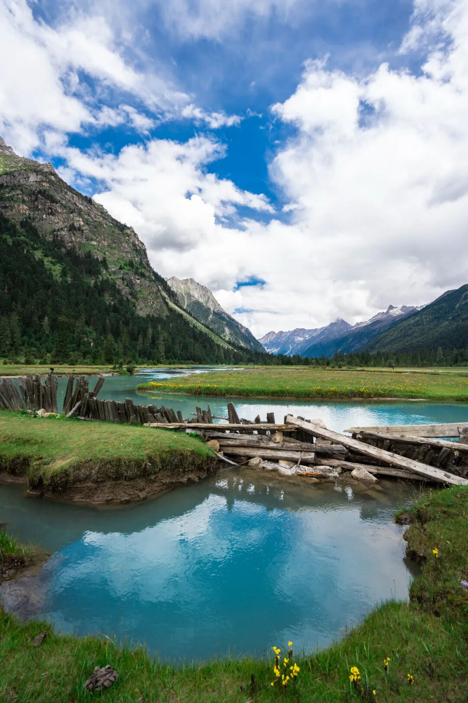
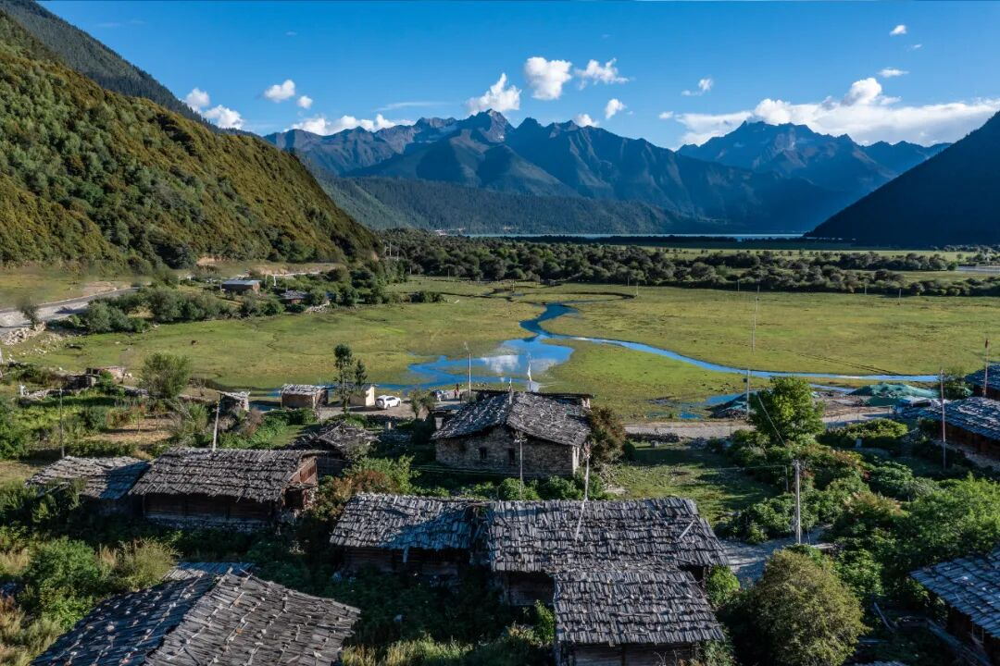
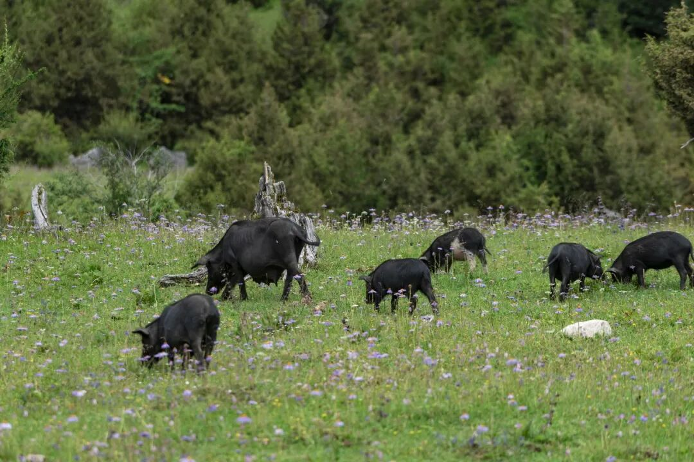

看腻了人山人海的常规打卡线，只想钻进深山里，去见一眼不染尘埃的雪山湖泊？
那一定要把林芝·巴松措+新措，放进你的西藏必走清单里
这里有被森林环抱的圣湖、随手出片的湖心小岛、一路溪流相伴的平缓步道，终点直面雪山冰川，湖水蓝得自带滤镜。
关键是：徒步难度极低、海拔友好、不用拼命爬山、高反概率小，新手、亲子、闺蜜同行都能轻松拿捏。
两天一夜，逃离喧嚣，住进山里，把一整个秋天/夏天的治愈都带走。

为什么一定要走「巴松措+新措」？
✅ 入门级高原徒步，对新手极度友好
全程路况平缓，几乎无陡坡大爬升，林间氧气充足，不用体能拉满也能走完，轻松适配高原初体验。
✅ 一日看遍西藏王牌自然风光
原始冷杉森林、潺潺溪流木桥、高山草甸牧场、皑皑雪山、冰川融湖，一步一景，随手拍都是壁纸级大片。
✅ 避开人潮，独享静谧秘境
新措深处远离主干道，商业化程度极低，没有拥挤人流，只有风声、水声、鸟鸣声，沉浸式贴近自然。
✅ 行程不累，度假感拉满 白天徒步吸氧赏景，晚上入住湖边藏式民宿，不用赶路暴走，主打松弛慢旅行。

经典2日不走回头路行程（懒人直接抄）
Day1：出发地→巴松措景区→湖心岛→湖边慢逛→住结巴村
▸ 上午：自驾/包车前往巴松措，沿途打卡林芝山间风光，平稳适配海拔，不匆忙赶路
▸ 下午：进景区必打卡核心点位 ✅ 湖心岛扎西岛：圣湖C位地标，祈福打卡绝佳，俯瞰整片碧绿湖面，氛围感拉满
✅ 湖边栈道漫步：近距离触摸湖水，远眺连绵雪山，慢悠悠拍照放空，适配全年龄段
▸ 傍晚：前往结巴村入住，背靠雪山、面朝湖泊，沉浸式体验藏地乡村烟火气，晚餐吃本地藏餐暖胃休整
亮点：第一天不高强度徒步，只适配海拔、放松身心，为第二天新措徒步蓄力，完美规避高反。

Day2：结巴村→新措入口→轻徒步环线→返程
▸ 清晨早起：山里空气清新含氧量高，乘车前往新措徒步起点桑通牧场，一路山野风光治愈感十足
▸ 白天核心：解锁新措轻徒步全程，沉浸式邂逅秘境风光
▸ 午后：徒步结束返程，顺路打卡沿途小众观景台，慢悠悠结束完美两日山野之旅

新措徒步干货详解（新手必看）
▪ 全程数据
往返全程：约6–7公里 | 全程耗时：3–4小时（含拍照休息）
最高海拔：约3800米 | 爬升幅度：极小，全程平缓无压力
▪ 路况实景
林间土路+平整草甸+溪流木桥，路况简单好走，无危险路段，穿舒适鞋就能走。7–8月雨季局部有小泥路，小心慢行即可。
▪ 沿途打卡动线，步步出片
起点桑通牧场→ 原始森林吸氧穿行 → 跨溪流木桥拍氛围感照片 → 高山牧场偶遇牛羊 → 终点新措湖畔直面雪山冰川
▪ 不想走路备选方案
体力偏弱、带老人小孩，可选择骑马/当地摩托接驳，轻松直达湖边，不用硬扛徒步。

交通+门票+住宿一站式搞定
【交通怎么去】
1）自驾：拉萨出发走林拉高速，直达巴松措景区门口，路况全程优质，新手司机也能轻松开
2）包车/小团：省心首选，不用自己开车查路线，司机全程带路，性价比超高，出行零操心
3）公共交通：先到林芝，再转当地班车前往巴河镇，后续再拼车进景区，适合预算精简人群
⚠️ 重点提醒：结巴村到新措入口最后30公里为搓衣板土路，轿车慢行可通行，SUV行驶体验更佳，不赶时间就慢慢开，沿途风景超美。

【门票实用信息】
▸ 巴松措景区门票：约120元/人 ▸ 景区观光车：45元/人，不自驾必买，省心省力逛遍核心景点
▸ 新措环保卫生费：10元/人，无额外隐形消费，性价比拉满

【住宿优选：结巴村】
不建议当天往返赶路！住结巴村临湖藏式民宿，安静不嘈杂，夜晚能看漫天星空，晨起推窗就是雪山湖景，完美适配度假节奏。
穿搭装备｜拍照好看+高原实用两不误
穿搭色系：白色、米色、浅咖、藏蓝，和森林湖水雪山适配度满分，随手拍都是氛围感大片，避开花哨亮色更高级
鞋子刚需：防滑耐磨运动鞋/轻徒步鞋，拒绝小白鞋，林间易沾泥，实用又耐造
必带防护：防晒帽、墨镜、高倍防晒霜、防风外套，高原紫外线极强，防风防晒缺一不可
随身小包清单：保温杯、少量巧克力能量零食、随身纸巾、简易雨衣、便携氧气瓶（新手备用即可）

⚠️ 高原安全+避坑红线，一定要收藏
1.首日不狂奔、不快跑、不熬夜，慢慢走路平稳适配海拔，拒绝剧烈运动，从源头预防高反
2. 徒步全程不远离主路，不私自深入无人林区，深山信号弱，安全永远第一位
3. 山里天气多变，十分钟晴十分钟雨，随身必带薄外套+便携雨具，应对突发天气
4. 尊重当地藏族习俗，不踩踏经幡、不随意投喂牛羊、不随意航拍村落，文明出行
5. 无痕徒步！所有垃圾全部随身带走，守护这片小众净土，留住原始秘境风光
6. 高反小贴士：前一晚不洗头不洗澡、不饮酒，多喝水多休息，心态放松，大概率全程无高反

最佳出行季节，选对时间美翻倍
5–6月：漫山野花盛开，森林绿意盎然，空气清新，路况干爽，人少体验感拉满
9–10月：层林尽染金黄，雪山倒影湖面，秋色氛围感封神，摄影爱好者首选档期
☀️ 7–8月：绿意最浓郁，避暑绝佳，唯一小缺点是雨季偶有阵雨，备好雨具即可出行

写在最后
西藏的美好，从来不止热门打卡点。
来巴松措发呆，去新措徒步，在森林里吸氧，在雪山下放空。
不用高强度赶路，不用透支体力，轻轻松松，把藏地最治愈的山野风光，全部收入眼底。
💐
「巴松措的春日瞬间」
Sharing the spring moments of Basongcuo
Tired of the usual crowded tourist trails? Ready to escape deep into the mountains for a glimpse of pristine snow-capped peaks and lakes untouched by the world?
Then you absolutely must add Nyingchi · Basum Lake + Xincuo to your Tibet must-visit list.
Here you'll find a sacred lake embraced by ancient forests, an effortlessly photogenic islet at the lake's heart, a gentle trail tracing murmuring streams the whole way, and a grand finale facing snow mountains and glaciers — with lake waters so impossibly blue they look filtered by nature itself.
Best of all: the hike is extremely easy, altitude-friendly, with no grueling climbs, and altitude sickness is unlikely — perfect for first-timers, families with kids, or a laid-back getaway with friends.
Two days and one night — escape the noise, stay in the mountains, and take home a whole season's worth of healing, whether autumn gold or summer green.
Why You Absolutely Must Do "Basum Lake + Xincuo"
✅ Beginner-level plateau hike, incredibly beginner-friendly
The entire route is gentle with virtually no steep ascents. The forest is rich in oxygen, so you can complete the hike without being in peak physical condition — an easy introduction to high-altitude trekking.
✅ See Tibet's greatest natural wonders in a single day
Primeval fir forests, babbling streams crossed by wooden bridges, alpine meadow pastures, snow-capped peaks, and glacial meltwater lakes — every step unveils a new view, and every snap could be a desktop wallpaper.
✅ Escape the crowds and enjoy a serene hidden paradise
Deep in Xincuo, far from the main roads, commercial development is almost nonexistent. No jostling crowds — just the sound of wind, water, and birdsong. An immersive, close-to-nature experience.
✅ A fatigue-free itinerary with full-on vacation vibes. Hike and soak in the scenery by day, then unwind at a lakeside Tibetan guesthouse by night. No rushing, no marathon walking — this is all about relaxed slow travel.
The Classic 2-Day No-Backtracking Itinerary (Lazy Travelers, Just Copy This)
Day 1: Departure → Basum Lake Scenic Area → Lakeside Islet → Leisurely Lakeside Stroll → Overnight in Jieba Village
▸ Morning: Drive or hire a car to Basum Lake, taking in Nyingchi's mountain scenery along the way. Acclimatize to the altitude gradually — no need to rush.
▸ Afternoon: Must-visit spots inside the scenic area ✅ Zaxi Islet (Lake Heart Island): The sacred lake's prime landmark, perfect for blessings and photos, with sweeping views over the emerald-green lake — atmosphere at its absolute peak.
✅ Lakeside Boardwalk Stroll: Get up close to the water, gaze at the distant snow-capped ranges, take photos at your own pace and simply zone out — suitable for all ages.
▸ Evening: Head to Jieba Village for the night, nestled against snowy peaks and facing the lake. Immerse yourself in authentic Tibetan village life, and warm up with a local Tibetan dinner before a good rest.
Highlight: Day 1 involves no strenuous hiking — just altitude adjustment and relaxation, saving your energy for the Xincuo trek on Day 2. The perfect strategy for avoiding altitude sickness.
Day 2: Jieba Village → Xincuo Trailhead → Light Hiking Loop → Return
▸ Early morning: The mountain air is crisp and oxygen-rich. Drive to the Xincuo trailhead at Sangtong Pasture — the mountain scenery along the way is pure therapy for the soul.
▸ Main event: Conquer the full Xincuo light hiking trail and encounter the hidden paradise's beauty up close.
▸ Afternoon: After the hike, head back and stop at off-the-beaten-path viewpoints along the way — a leisurely end to your perfect two-day mountain escape.
Xincuo Hiking Guide: Everything You Need to Know (Must-Read for Beginners)
▪ Trail Stats
Total distance: approx. 6–7 km round trip | Total time: 3–4 hours (including photo stops and breaks)
Max elevation: approx. 3,800 m | Elevation gain: minimal, the entire trail is flat and stress-free
▪ Trail Conditions
Forest dirt paths + flat meadows + wooden stream bridges — the terrain is straightforward and easy, with no dangerous sections. Comfortable shoes are all you need. In the rainy season (July–August), some sections may get a little muddy — just walk carefully.
▪ Photo-Worthy Route — Every Step Is Instagram Gold
Start at Sangtong Pasture → Breathe in the ancient forest → Cross wooden bridges over streams for atmospheric photos → Spot yaks and sheep on alpine pastures → Finish at Xincuo's lakeshore, face-to-face with snow mountains and glaciers
▪ Alternatives if You Don't Want to Walk
If you have limited stamina or are traveling with elderly family or young children, you can hire a horse ride or local motorbike shuttle that takes you straight to the lake — no need to tough out the hike.
Transportation, Tickets & Accommodation — All Sorted in One Go
【Getting There】
1) Self-drive: Take the Lhasa-Nyingchi Expressway from Lhasa straight to the Basum Lake scenic area entrance. The roads are excellent throughout — even novice drivers can handle it with ease.
2) Private car or small group tour: The hassle-free choice. No need to drive or navigate — a driver handles everything end to end. Excellent value and zero stress.
3) Public transport: Get to Nyingchi first, then take a local bus to Bahe Town, and share a ride into the scenic area from there — ideal for budget-conscious travelers.
⚠️ Important note: The final 30 km from Jieba Village to the Xincuo trailhead is a washboard dirt road. Sedans can manage it if driven slowly, but an SUV offers a smoother ride. Take your time — the scenery along the way is stunning.
【Ticket Information】
▸ Basum Lake scenic area ticket: approx. 120 RMB/person ▸ Scenic shuttle bus: 45 RMB/person (essential if you're not self-driving — effortless access to all core attractions)
▸ Xincuo environmental and sanitation fee: 10 RMB/person, no hidden costs — unbeatable value.
【Where to Stay: Jieba Village】
Don't try to do a same-day round trip! Stay at a lakeside Tibetan guesthouse in Jieba Village — quiet and peaceful, with star-filled skies at night and snow-capped mountain lake views right outside your window in the morning. The perfect holiday pace.
What to Wear & Pack | Look Great in Photos + Stay Practical on the Plateau
Color palette: White, cream, light brown, and Tibetan blue — they blend perfectly with the forests, lakes, and snowy peaks. Every casual shot looks like a moody masterpiece. Skip bright, flashy colors for a more sophisticated look.
Footwear essentials: Non-slip, durable sneakers or light hiking shoes. Leave the pristine white sneakers at home — forest trails can get muddy. Go for practical and sturdy.
Protection must-haves: Sun hat, sunglasses, high-SPF sunscreen, windproof jacket. The plateau UV is intense — both wind protection and sun protection are non-negotiable.
Daypack checklist: Thermos, a few chocolate bars or energy snacks, tissues, a lightweight raincoat, and a portable oxygen canister (just in case, especially for first-timers).
⚠️ Plateau Safety & Red Flags to Avoid — Save This for Later
1. On the first day: no sprinting, no running, no staying up late. Walk slowly and let your body adjust to the altitude steadily. Avoid strenuous activity to prevent altitude sickness at the source.
2. Stay on the main trail at all times; do not venture into unmarked forest areas. Cell signal is weak deep in the mountains — safety always comes first.
3. Mountain weather is unpredictable — sunshine one minute, rain the next. Always carry a light jacket and portable rain gear for sudden weather changes.
4. Respect local Tibetan customs: don't step on prayer flags, don't feed livestock, and don't fly drones over villages without permission. Travel responsibly.
5. Leave no trace! Pack out all your trash. Help preserve this off-the-beaten-path paradise and keep its pristine beauty intact.
6. Altitude sickness tip: The night before, avoid washing your hair or bathing, and skip alcohol. Drink plenty of water, rest well, and stay relaxed — chances are you'll get through the whole trip without any altitude issues.
Best Seasons to Visit — Choose the Right Time for Double the Beauty
May–June: Wildflowers blanket the hillsides, forests are lush and green, the air is crisp, trails are dry, and there are fewer visitors — the experience is at its absolute peak.
September–October: The forests turn golden, snow-capped peaks mirror perfectly on the lake — the autumn atmosphere is nothing short of legendary. A photographer's dream season.
☀️ July–August: The greenery is at its richest — perfect for escaping the summer heat. The only minor downside is occasional rain showers; just pack rain gear and you're good to go.
A Final Word
The beauty of Tibet has never been limited to its famous landmarks.
Come zone out by Basum Lake, hike through Xincuo, breathe in the forest air, and clear your mind beneath the snowy peaks.
No grueling itineraries, no pushing yourself to exhaustion — just easy, breezy travel that lets you take in Tibet's most soul-soothing mountain scenery with your own eyes.
💐
"Spring Moments at Basum Lake"
Sharing the spring moments of Basongcuo